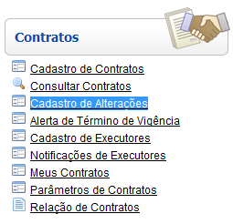
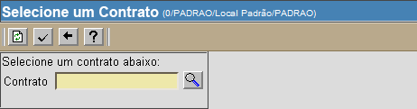
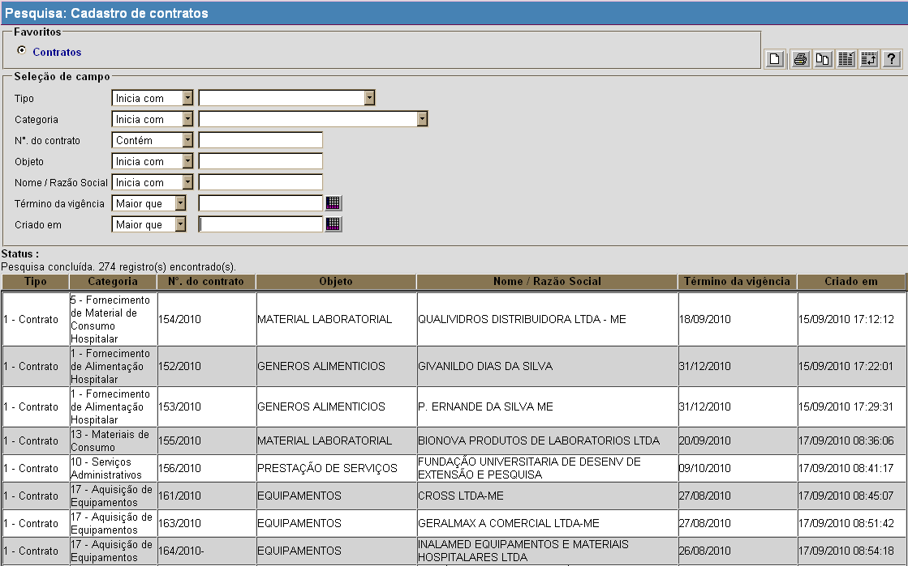
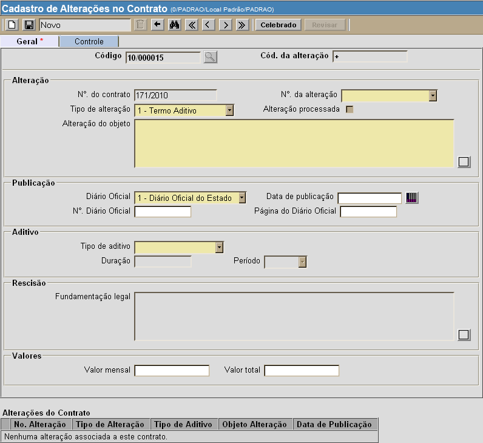
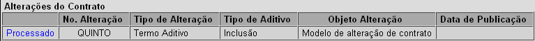

Cadastro de Alterações [
Voltar
]
Utilize
este formulário para cadastrar uma alteração contratual, como termo
aditivo, de rescisão, de retificação e apostilamento..
O "Cadastro de alterações"
encontra-se no menu "Contratos".

Após clicar no formulário, o sistema abrirá
a seguinte tela:

Siga os passos abaixo para cadastrar
alteração a um contrato:
1º Passo: clique
no botão  para
selecionar o contrato para o qual deseja cadastrar uma alteração. Ao clicar no botão , a
seguinte tela será aberta: para
selecionar o contrato para o qual deseja cadastrar uma alteração. Ao clicar no botão , a
seguinte tela será aberta:

Os filtros
disponíveis para auxiliar a localização do contrato são:
- Tipo. Se desejar que os resultados da
pesquisa retornem apenas contratos de um determinado tipo,
especifique-o aqui:
- Contrato;
- Termo de Concessão;
- Termo de Cessão;
- Termo de Permissão;
- Termo de Cooperação Técnica;
- Contrato de Comodato;
- Contrato de Gestão;
- Termo de Ajuste de Conduta;
- Termo de Doação; e
- Termo de Compromisso.
- Categoria. Após
selecionar um tipo de contrato, as categorias relativas a este serão
exibidas neste campo de opções. Se desejar que os resultados da
pesquisa retornem apenas uma determinada categoria de contrato,
selecione com um clique o tipo de contrato e, em seguida, a categoria
do mesmo.
- N°. do contrato.
Para filtrar contratos que contêm um determinado conjunto de números,
informe-o aqui.
- Objeto.
Digite aqui os caracteres iniciais do objeto referente ao contrato que
deseja localizar. A pesquisa imediatamente retornará contratos cujo
objeto se inicia com os caracteres digitados.
- Nome / Razão social. Digite aqui os caracteres
iniciais
do nome ou razão social referente ao contrato que deseja localizar. A
pesquisa
imediatamente retornará contratos cuja razão social se inicia com os
caracteres
digitados.
- Término da vigência.
Informe aqui a data de término de vigência para que a pesquisa retorne
contratos com término igual ou posterior à data informada.
- Criado em. Informe
aqui uma data de criação para que a pesquisa retorne
contratos com data de criação igual ou posterior à data informada.
Dicas para
preenchimento dos campos de data:
- Data
atual: digite o sinal . (ponto) e
pressione a tecla "Enter" para que o sistema retorne a data atual;
- Data
do mês corrente: digite o dia do mês e
pressione a tecla "Enter" para que o sistema retorne o mês e ano
correntes;
- Dias
a contar da data atual: digite o sinal + (mais) ou - (menos)
antes do número de dias em referência à data atual e pressione
a
tecla "Enter" para a data anterior ou posterior à data atual.
Exemplo: se a data
atual é 20/10/2010,
digite "+10"
e pressione a tecla "Enter" para que o sistema retorne o dia 30/10/2010
2° Passo: após
localizar o contrato desejado, selecione-o com um clique.
3° Passo: clique no botão  para abrir a tela de
alteração do contrato selecionado. A seguinte tela será
exibida. para abrir a tela de
alteração do contrato selecionado. A seguinte tela será
exibida.

4° Passo: preencha os dados relevantes da alteração contratual. Os
campos em amarelo são obrigatórios.
5° Passo: clique no botão  para
salvar os dados inseridos. para
salvar os dados inseridos.
6° Passo: se todos os dados estiverem corretos, clique no botão para concluir e
efetivar a alteração no contrato. Após a celebração da
alteração, ela será exibida com status "Processado" na parte inferior
da tela.

Se desejar fazer uma revisão na alteração, clique no
botão  .
Lembre-se de salvar qualquer eventual revisão e, em seguida, clicar no
botão para concluir e efetivar a alteração. .
Lembre-se de salvar qualquer eventual revisão e, em seguida, clicar no
botão para concluir e efetivar a alteração.
Ir
para o topo da página
|